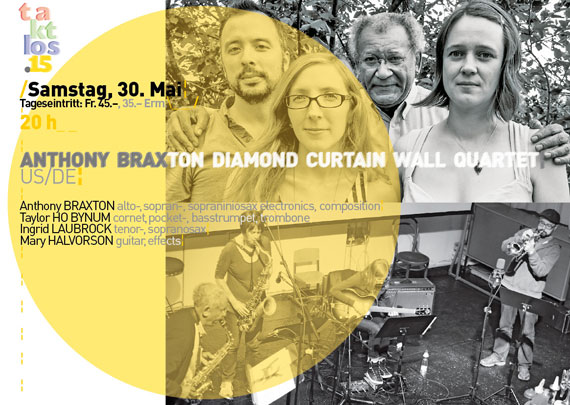
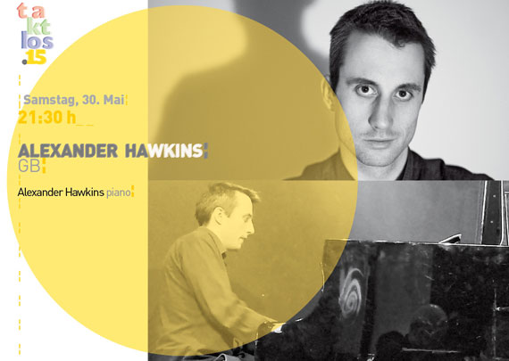
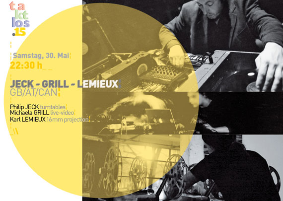

¦20 h_ _Anthony Braxton Diamond Curtain Wall Quartet¦ US/DE¦ ¶¶¶¶ 21:30 h _Alexander Hawkins¦ GB¦ ¶¶¶¶ 22:30 h_ _Jeck-Grill-Lemieux¦ GB/AT/ CAN¦
| 30. Mai 2015 | ||
| 20:00 |
¦
¦~ Rote Fabrik _Zürich_ Aktionshalle__ Tageseintritt_ Fr. 45.–/35– Erm._¦~ Reservation/ Vorverkauf Starticket:_Tagespass_3-Tagepass _¦__¶¶¶¶
¦
¦_ ta kt los .15 _ _Samstag_30. Mai_
¦
¦_20 h_ A N T H O N Y B R A X T O N D I A M O N D C U R T A I N W A L L Q U A R T E T__US/DE ¦_ _ Anthony BRAXTON alto-/sopranosax/electronics/composition; Taylor HO BYNUM cornet,
pockettrumpet; Ingrid LAUBROCK tenor-/sopranosax; Mary HALVORSON guitar/effects_¦~
¦

¦
_ _Video [ ► ] _ _ [ ► ] _ _ [ ► ]
¦
* Wie lässt sich das immense musikalische Œuvre von Anthony Braxton fassen? Das Zürcher Konzert von seinem Diamond Curtain Wall Quartet zum Beispiel ist zwischen einer Aufführung von «Sonic Genome» in Turin und einer intensiven Woche in Amsterdam angesiedelt. Die drei Veranstaltungen dokumentieren aber nur Teile der enormen Bandbreite und Fülle von Braxtons Schaffen. Es reicht von Konzerten mit frei improvisierter Musik über komplexe Kompositionen bis zu vollständig ausgeschriebenen Opern. Bei «Sonic Genome» im ägyptischen Museum von Turin sind sechzig MusikerInnen während acht Stunden auf diversen Bühnen in Aktion. Das dOeK-Festival in Amsterdam bringt über sechs Tage zehn MusikerInnen aus Braxtons Umfeld mit zehn lokalen MusikerInnen in unterschiedliche Zusammenhänge.¦
¦
¦ Das Diamond Curtain Wall Quartet befindet sich an einer Schnittstelle zwischen Komposition und Improvisation. Mit dem Blechbläser Taylor Ho Bynum, der Gitarristin Mary Halvorson und der Saxofonistin Ingrid Laubrock hat Braxton, der selbst die ganze Saxofonfamilie spielt, seinen engeren Kreis an der Seite. Es ist ein Kreis, der mit Braxtons Kompositionen vertraut ist, mit geschriebener Musik souverän umgeht und auch zu improvisieren weiss. Ho Bynum ist zusätzlich in Braxtons Tri-Centiric Foundation stark engagiert und hilft so aktiv mit, Braxtons Œuvre weiterzuverbreiten und zu bewahren. Mit dem dOeK-Festival in Amsterdam werden auch zwei herausragende Musiker gefeiert, die gleichermassen für die komponierte wie die improvisierte Musik der USA respektive Europas stehen. Anthony Braxton wird am 4. Juni siebzig Jahre alt, und einen Tag später feiert der Pianist Misha Mengelberg seinen achtzigsten Geburtstag. Das Taktlos feiert ein wenig mit.\
¦
\Ausgewählte Tonträger\ Anthony Braxton (mit Taylor Ho Bynum): «Duo (Amherst) 2010 DVD», New Braxton House, 2010¦ Anthony Braxton: «Quartet (Moscow) 2008», New Braxton House, 2008¦ Anthony Braxton: «Trio (Victoraville) 2007», Victo, 2007¦
\www\ www.tricentricfoundation.org ¦ www.taylorhobynum.com ¦ www.ingridlaubrock.com ¦ www.maryhalvorson.com \
¦
**
¦_21:30 h_ A L E X A N D E R H A W K I N S__GB ¦_ _ Alexander HAWKINS piano_¦~
¦

¦
_ _Video [ ► ] _ _ [ ► ]
¦
** Gibt es in England eine Jazzszene ausserhalb von London? «Oxford bildet ein Gegengewicht. In der altehrwürdigen Universitätsstadt ist in den letzten Jahren eine hochkarätige Szene entstanden, die der Londoner Übermacht trotzt», schreibt Christoph Wagner am 13. März in der NZZ. Dabei bezieht er sich unter anderem auf den jungen Pianisten Alexander Hawkins. Im Oktober 2013 war Hawkins bei Fabrikjazz mit The Convergence Quartet zu Gast, dem auch der Trompeter Taylor Ho Bynum angehört, und hat einen starken Eindruck hinterlassen. Er ist Teil von Anthony Braxtons «Sonic Genome», spielt mit Han Bennink im Duo und gehört zum Quartett des südafrikanischen Schlagzeugers Louis Moholo. Mit der Band des äthiopischen Vibrafonisten und Bandleaders Mulatu Astatqé – dessen Musik vor zehn Jahren durch den Film «Broken Flowers» von Jim Jarmusch eine Renaissance erlebte – pflegt er Ethio-Jazz. In diesen unterschiedlichen Zusammenhängen wird klar, wie gut er sich einbringen kann.¦
¦
¦ Seit einiger Zeit ist Hawkins mit seinem eigenen Ensemble unterwegs, und soeben sind Trioaufnahmen bei seinem neuen eigenen Label erschienen. Aber zu einem wirklichen Ereignis wird es, wenn er Solo spielt. Da rauscht auf eine eigenständige Weise die Geschichte des Jazzpianos vorbei. Duke Ellington und Sun haben ihn besonders inspiriert, schreibt er in den Linernotes zur ersten Solo-CD «Song Singular». Nebst Eigenkompositionen ist auch eine famose Fassung von Billy Strayhorns «Take the A Train» zu hören, aber auch Cecil Taylor hat in seiner gleichzeitig expressiv und behutsamen Musik Spuren hinterlassen.\
¦
\Ausgewählte Tonträger\ «Alexander Hawkins Trio», AH, 2015¦ Alexander Hawkins: «Song Singular», Babel, 2013¦ Alexander Hawkins Ensemble: «Step Wide, Step Deep», Babel, 2013¦
\www\ www.alexanderhawkinsmusic.com \
¦
***
¦_22.30h h_ J E C K - G R I L L - L E M I E U X__GB/AT/CAN ¦_ _ Philip JECK turntables; Michaela GRILL live-video; Karl LEMIEUX 16mm projections_¦~
¦

¦
_ _Video [ ► ] _ _ [ ► ] _ _ [ ► ] _ _ [ ► ] _ _ [ ► ] _ _ [ ► ]
¦
*** Welche Synergien gibt es auf der audiovisuellen Ebene zwischen analogen und digitalen Elementen? Der Turntablespieler Philip Jeck aus Liverpool, die Videokünstlerin Michaela Grill aus Wien und Karl Lemieux aus Montreal, der mit 16-mm-Projektoren arbeitet, verstehen es, sie mit ihrer improvisierten audiovisuellen Performance sicht- und hörbar zu machen. Für einmal sorgen nicht MusikerInnen auf der Bühne für das Bild. Die drei AkteurInnen halten sich im Hintergrund, sind nur schemenhaft zu erkennen, während die Bilder über die Leinwand flackern und sich mit den Sounds zu einer Traumwelt verdichten. Es sind sepiagetönte Bilder, wie man sie von alten Fotos kennt, in die sich gelegentlich dunkle Blautöne mischen. Sie wirken organisch, wie aus dem Innern von Pflanzen, könnten aber ebenso gut aus einem kreisenden Satelliten aufgenommen worden sein. Die Wahrnehmungsfähigkeit ist gefordert, Mikro- und Makroebenen überlagern sich, schaffen Unschärfen. Sie kreieren eine Traumwelt, in der auch mal ein flügelschlagender Kranich auftaucht.¦
¦
¦ Bei Philip Jeck dreht sich das Vinyl auf alten Plattenspielern zwischen 16 und 78 Umdrehungen pro Minute, sie eiern manchmal langsamer oder schneller – Scratch ’n’ Loop. Er bedient sich ungeniert verschiedenster Quellen, verbindet Stimmen, Musik, Geräusch, und auch das Knistern der Nadeln wird Teil der Musik. Ganz ähnlich agiert Lemieux, wenn er seine gefundenen Filmstreifen durch die 16-mm-Projektoren zieht und Grill mit ihren Video-Liveinterventionen das Geschehen auf eine weitere Reflexionsebene transponiert. Die Flüchtigkeit der Töne und der Bilder werden eins.\
¦
\Ausgewählte Film- und Tonträger\ Philip Jeck: «An Ark for the Listner», Touch, 2010¦ Philip Jeck: «Sand», Touch, 2008¦ Michaela Grill: «Into the Great White Open», Sixpack Film, 2014¦
\www\ www.philipjeck.com \
{kind=link}
{kind=link}
{kind=link}
{kind=link}